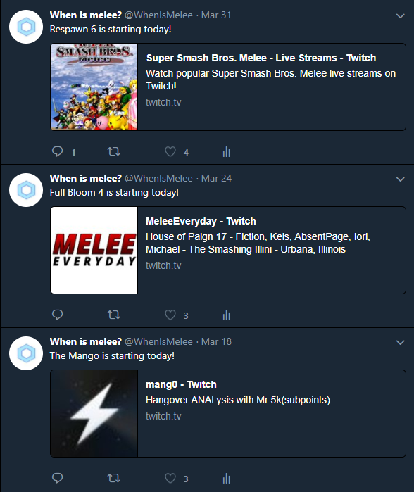

A Twitterbot that was created for the videogame Super Smash Bros. Melee. There are many tournaments that happen each year for this videogame.
I decided to create this Twitterbot to tweet out whenever a tournament was happening in order to notify users there is a potential event to be spectated. There are over 300+ users that follow this bot.
Link to the twitter bot
Link to Github
